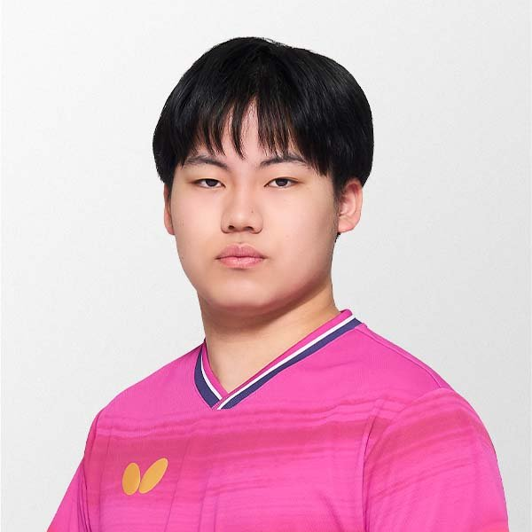

Sora Matsushima (Япония, 8550 очков)Биография. Родился 29 апреля 2007 года в префектуре Киото в семье тренеров по настольному теннису. Уже в 11 лет ITTF называла его «следующим вундеркиндом», отмечая бесстрашную атаку с обеих сторон. В детстве четырежды выигрывал World Cadet Challenge. Левша с shakehand‑хваткой.
Стиль и инвентарь. Его молниеносный бэкхенд, которым он открывает атаку с приёма, считается одним из лучших в мире. Играет основанием Butterfly Fan Zhendong ALC с накладками Dignics 09C.
Карьера и форма. В 2025‑м выиграл чемпионат Японии и WTT Champions во Франкфурте, обыграв в финале Дан Цю. В 2026‑м взял два Grand Smash — US Smash и China Smash, где в семипартийном финале одолел Линь Юньжу. 5 октября 2026‑го возглавил рейтинг, став первым японцем на вершине с 1980 года. Плюс золото Азиатских игр‑2026 с командой. В 19 лет — лицо новой японской эпохи.